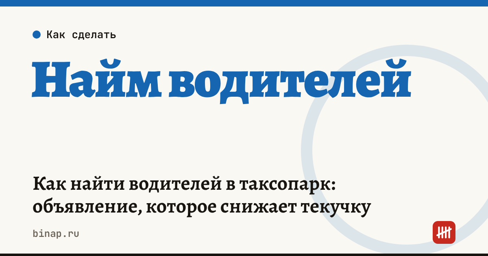

Как найти водителей в таксопарк: объявление, которое снижает текучку

Водители уходят из таксопарка чаще всего не из-за денег как таковых, а из-за несовпадения ожиданий: в объявлении было «доход от 5 000 ₽ в день», а на деле аренда, топливо и штрафы съедают половину. Объявление, в котором условия расписаны честно и в цифрах, приводит меньше кандидатов, но они дольше остаются. А каждый день простоя машины — это потерянные деньги парка.
Коротко
- Пишите условия в цифрах: аренда или процент, кто платит за топливо, ремонт, мойку, страховку.
- График и выходные — прямо в объявлении.
- Требования к водителю такси задаёт закон № 580-ФЗ: среди них стаж вождения не меньше трёх лет.
- В вакансии нельзя ставить требования по полу, возрасту и другим признакам, не связанным с деловыми качествами.
- Считайте, сколько стоит простой машины, — это ваш бюджет на поиск водителя.
Сроки, изменения и разборы для ИП и самозанятых — каждое утро в Telegram и MAX. Подпишитесь, чтобы не пропустить.
Что написать в объявлении
| Блок | Пример формулировки |
|---|---|
| Модель работы | аренда авто 2 500 ₽ в сутки или работа за процент — [условия] |
| Машина | марка, год, газ или бензин, брендирование |
| Расходы | топливо — водитель, ремонт и ТО — парк, мойка — [кто] |
| График | 6/1 или 5/2, смена 12 часов, выходные по договорённости |
| Выплаты | ежедневно или раз в неделю, как |
| Требования | стаж от 3 лет, права категории B, [опыт в такси — желательно] |
| Оформление | самозанятый, ИП или трудовой договор |
Готовое объявление, сообщение кандидату и памятку на первую смену — скачать бесплатно.
Требования закона
- Водитель такси должен соответствовать требованиям закона № 580-ФЗ: в том числе иметь стаж вождения не меньше трёх лет.
- Сведения о водителе и машине должны быть в региональных реестрах — как в них попасть, читайте в статье разрешение на такси: реестры пошагово.
- В объявлении о вакансии нельзя писать требования о поле, возрасте, семейном положении и других обстоятельствах, не связанных с деловыми качествами работника.
Сколько стоит простой машины
Пример (расчёт редакции, цифры условные). Аренда — 2 500 ₽ в сутки. Машина стоит без водителя 5 дней в месяц.
| Сумма | |
|---|---|
| Недополученная аренда в месяц | 5 × 2 500 = 12 500 ₽ |
| За год на одну машину | 150 000 ₽ |
| Парк из 20 машин | до 3 000 000 ₽ в год |
Если честное объявление сокращает простой хотя бы на 2 дня в месяц, на парке из 20 машин это 100 000 ₽ в месяц. Окупаемость машины при разной загрузке — в калькуляторе окупаемости машины в такси.
Как оформить водителя
Самозанятый на аренде, ИП или трудовой договор — у каждого варианта свои налоги и риски переквалификации. Разбор — в статье водитель такси: самозанятый, сотрудник или аренда.
Все материалы — в разделе «Таксопаркам».
Частые вопросы
Можно ли написать в объявлении «доход от 5 000 ₽ в день»? Лучше показать расчёт: сколько заказов, какая аренда и какие расходы. Красивая цифра приводит кандидатов, которые уходят через неделю.
Можно ли брать водителя без опыта в такси? Опыт в такси закон не требует, но стаж вождения — не меньше трёх лет.
Можно ли указать возраст «до 45 лет»? Нет, требования к возрасту, не связанные с деловыми качествами, в вакансии ставить нельзя.